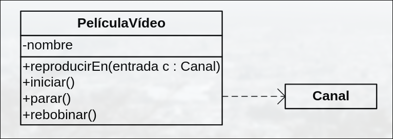
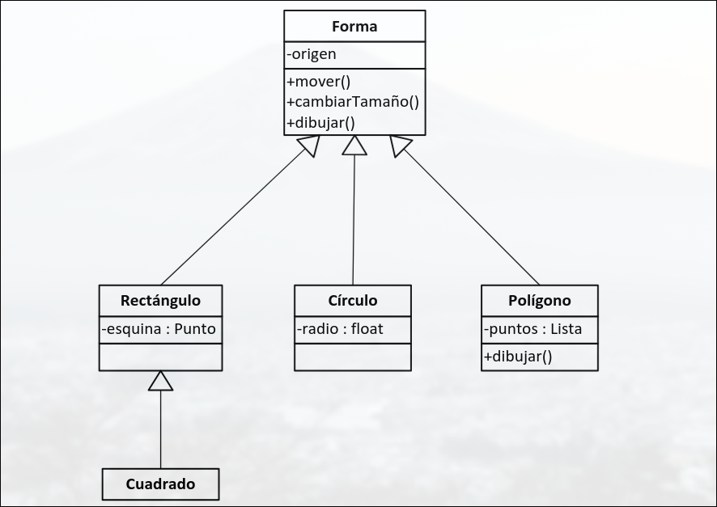
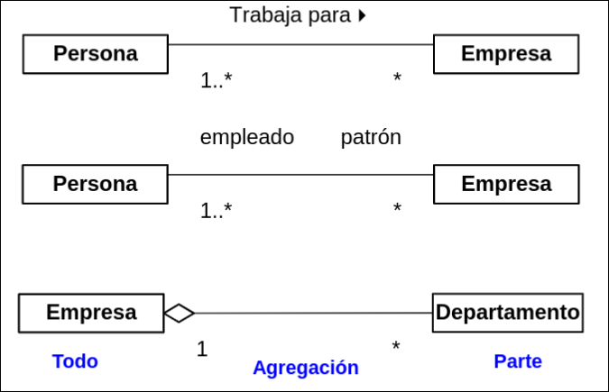
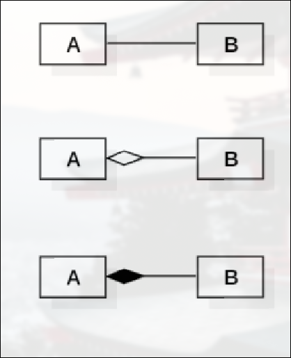
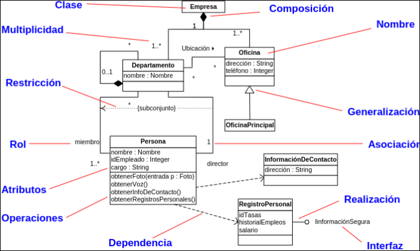

Modelado Estructural
Tema 3 de 10 Segundo curso, 2.º cuatrimestre ≈ 1 min de lectura
Temas de DESOFT · 3/10
(diagramas de clases)
Una clase es una descripción de un conjunto de objetos que comparten atributos, operaciones, relaciones y semántica. Son abstracciones independientes del lenguaje de programación capaces de implementar interfaces.
Los objetos de una misma clase tienen los mismos tipos de estado y comportamiento. Las clases colaboran entre si para satisfacer necesidades. Hay 3 tipos de relaciones:
- Dependencia: los cambios en la planificación de un elemento pueden afectar a otro, indica utilización.

- Generalización: relación padre hijo.

- Asociación: relación estructural. Se usa para vincular clases. Ademas tenemos adornos:
- Nombre: etiqueta que describe la relación
- Rol: papel que juega cada clase relacionada
- Multiplicidad: nº de instancias participantes
- Agregación: es como lo de entidad débil - entidad fuerte de BDI (asociación todo-partes).
- Composición: igual que en POO.


Son la base para diagramas de paquetes, componentes y despliegue. Pueden contener **paquetes**.